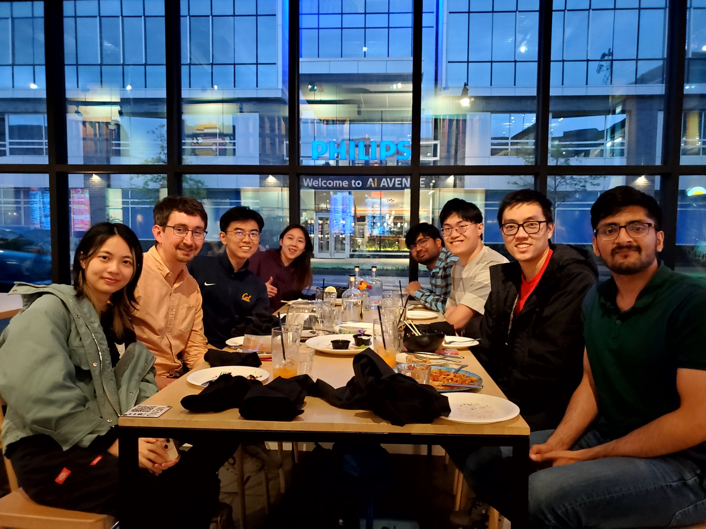
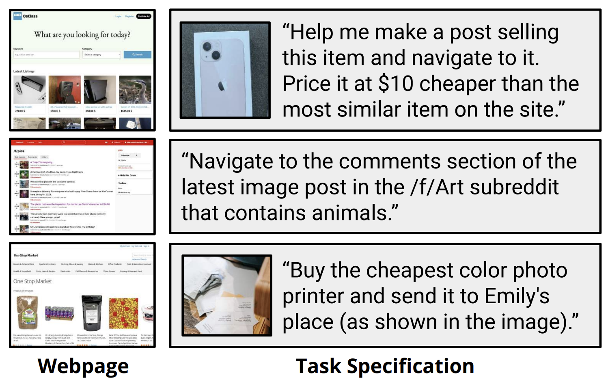
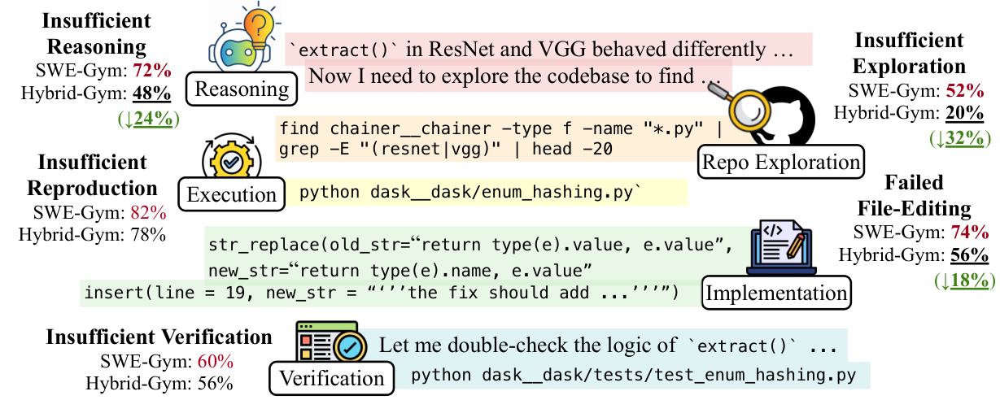
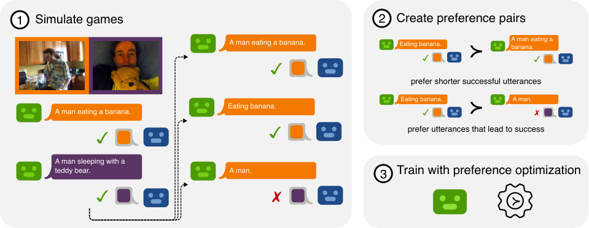
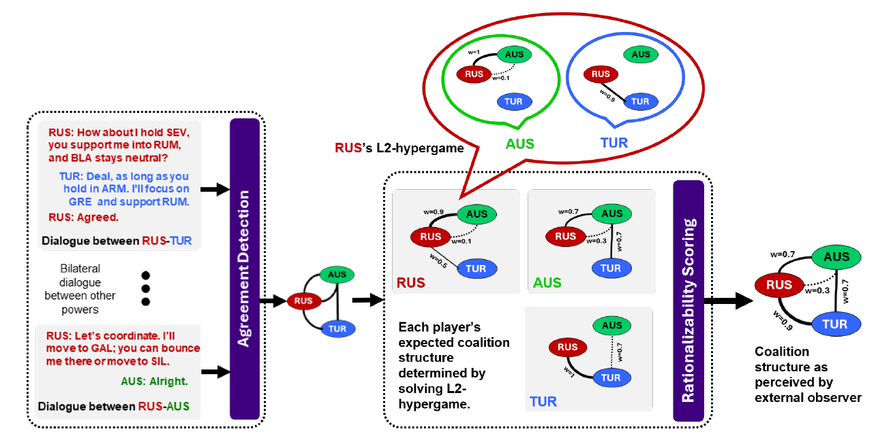
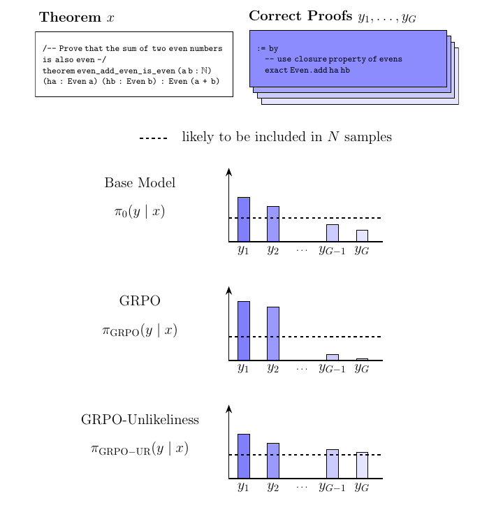

Language Agents, Interaction, Reasoning
Language Technologies Institute, Carnegie Mellon University

Our group works on enabling people and AI systems to communicate and collaborate on real-world tasks: writing code, using computers and the web, and solving reasoning problems. We develop methods that allow agents to learn from interactions with people, environments, and each other; communicate effectively and efficiently; and plan and reason about the world.
PI: Daniel Fried · dfried@cs.cmu.edu (note for prospective students)

Benchmarks and methods for agents that carry out long-horizon tasks on the web and computers, and improve from experience.

Environments and training methods for coding agents that generalize across tasks and repositories.

How can models infer what people mean, not just what they say, and communicate with them efficiently?

How do language models negotiate, form coalitions, and handle conflicting values, with each other and with people?

Training and inference methods for reasoning in language models.
We recruit PhD and MLT students through the Language Technologies Institute at Carnegie Mellon University. Applications go through LTI graduate admissions, with deadlines in early December.
See the page for prospective students for whether we are recruiting this cycle and how to apply.